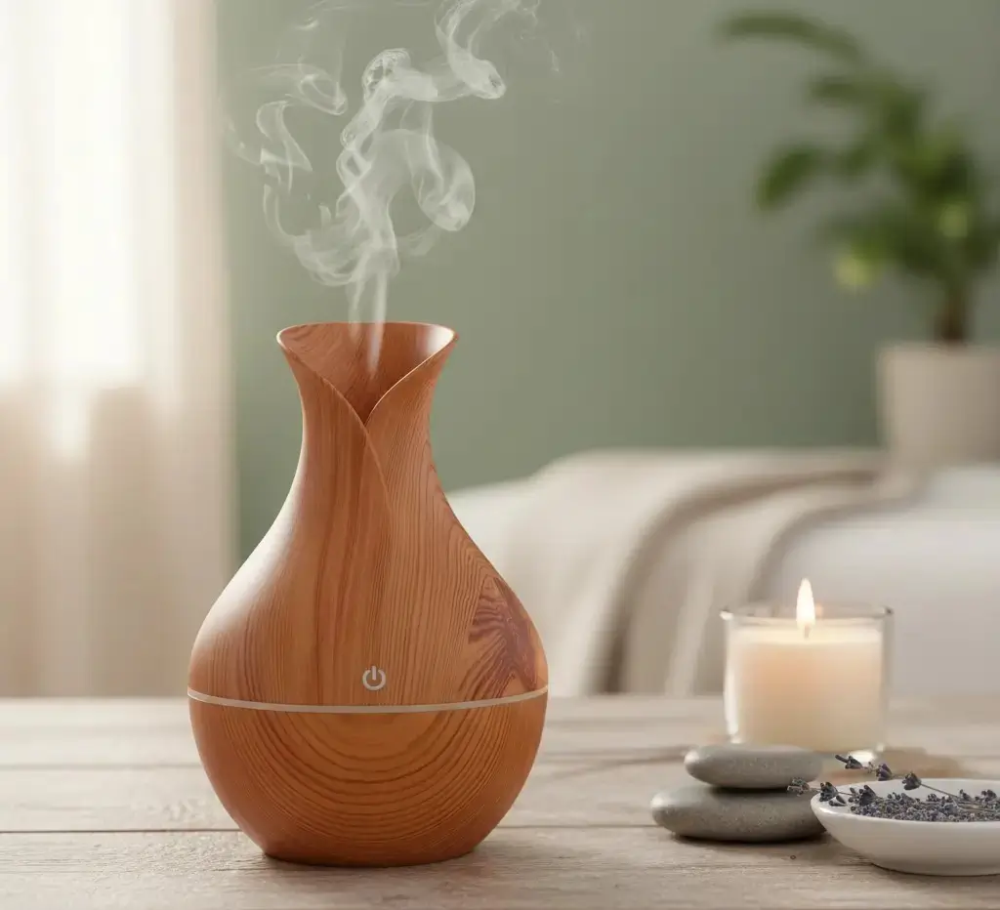

Hogar
Humidificador Difusor de Aromas (Tipo Madera)
Un pequeño acento para una mesa auxiliar o escritorio. El formato decorativo encaja donde no quieres un aparato protagonista.
Antes de elegir: Humidificador Difusor de Aromas (Tipo Madera)
Confirma capacidad, limpieza del depósito y si admite aceites; no todos los humidificadores los aceptan.
Precio y disponibilidad en tienda · Abre otra pestaña